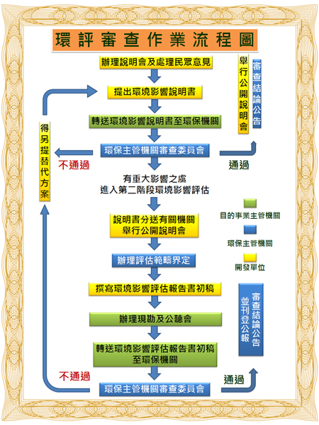

基於國家長期發展利益，環境保護與經濟發展應兼籌並顧，環境部於一九九四年公布環境影響評估法，規定各種開發行為，在規劃階段應同時考量環境因素，並須通過環境影響評估之審查程序始得開發，並應於施工及營運階段進行環境監測，以達永續發展之目標。
依據開發行為階段程度上的不同，環境影響評估包括了：
1.環境影響說明書（一階環評）
2.環境影響評估報告書（二階環評）
3.環境影響差異分析
4.環境現況差異分析及對策檢討報告
5.環境影響調查報告書。
景丰公司的主管具備 20 年以上之環境影響評估與環境監測工作經驗，且皆具綜合評估者資格，曾主持或參與之環境影響評估與環境監測專案涵蓋工業區開發、電廠興建、公路開發、高樓建築、休閒娛樂場所設置、海拋及海洋放流等領域，可滿足業主不同之需求。
台82 線30K+700~31K+400 路面加高改善工程環境影響說明書
變更工作
台13 線後續拓寬改善工程(17K+400~22K+143)環境影響說明書
新竹縣體育場(運動公園)第四次環境影響差異分析報告
台16 線19K~25K 段公路改善工程環境影響差異分析
豐坪溪及其支流水力發電開發計畫環境現況差異分析及對策檢討
報告
苗栗縣中平工業區環境影響說明書
新竹關西外環道新闢工程環境影響說明書
聯茂電子新埔廠開發計畫環境影響說明書
台電大林電廠環境影響說明書變更內容對照表編擬
大新竹風光計畫環境影響說明書
六輕四期擴建計畫之化學、石油及石油製品等各式儲槽環境影響
調查計畫
新竹科學工業園區北二高寶山交流道聯絡道拓寬工程環境影響
說明書
中油三輕更新計畫環說變更前後空氣品質模式模擬及環說書變更
臺中港南填方區（I）圍堤及航道浚深拓寬工程環境影響差異分析
大潭燃氣火力發電計畫增設全黑啟動機組環境影響差異分析報告
離島工業區長春大連麥寮廠第六次變更環境影響差異分析
淳品公司台北港化油品儲運中心儲運化油品第一次及二次變更環境
影響差異分析
通霄發電廠複循環第六號機發電計畫增設全黑啟動機組環境影響
差異分析報告
國泰人壽-高速鐵路桃園車站特定區產業專區開發經營案
(遠程計畫發展腹地)環境影響說明書
國泰人壽-高速鐵路桃園車站特定區產業專用區開發經營案
環境影響差異分析報告
國立臺灣大學醫學院附設癌醫中心醫院新建工程
(合併輻射科學暨質子治療中心)第二次環境影響差異分析報告
國產實業-南港昆陽街都更案環境影響說明書
萬華(東、西)車站大樓民間參與興建營運案環境影響差異分析
冠德建設-臺北市松山區民生段134-6等5筆地號土地都市更新案
環境影響說明書
冠德建設-新北市中和區台貿段114地號等9筆土地公辦眷改都市更新
計畫環境影響說明書
冠德建設-捷運新莊線菜寮站聯合開發案環境影響說明書
長庚醫療財團法人-新北市立土城醫院興建營運暨移轉(BOT)案
環境影響說明書
遠揚建設-新北市板橋區仁愛段904地號等3筆土地新建工程
環境影響說明書
遠雄建設-新竹市東山段一小段957-2地號等20筆店舖及集合住宅
新建工程境影響說明書
遠雄建設-臺中市南屯區豐功段252、253、255 地號新建工程
環境影響說明書
遠雄建設-臺中市南屯區豐功段257 地號新建工程環境影響說明書
新普建設-國玉二期別墅住宅新建工程禾和二區環境影響差異
分析報告
台南市政府-亞太國際棒球訓練中心第一階段環境影響評估委託
服務工作
|

|